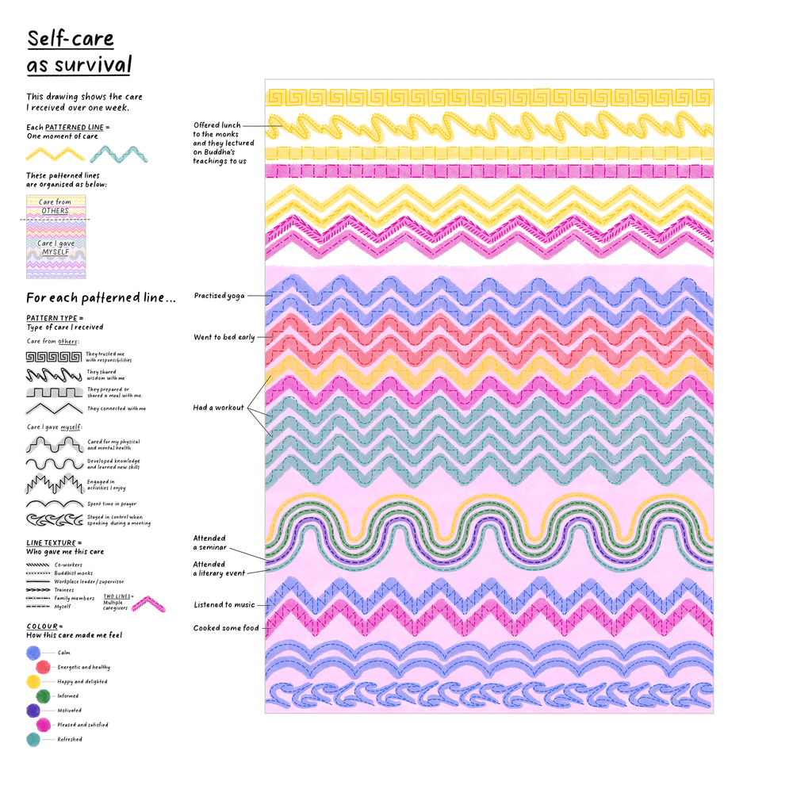
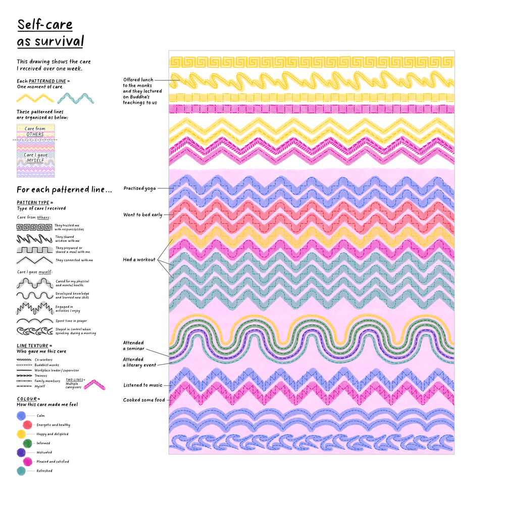

Insights in Ink : Myanmar
2021
Ce projet consistait à utiliser des données personnelles de femmes activistes pour l'égalité des genres et la paix au Myanmar. Stefanie Posavec à adapter le format de son projet "Dear Data" pour concevoir et animer des ateliers de collecte et de visualisation de données auprès de ces activistes. Elle a notamment insisté sur la confidentialité de celles-ci en évitant la collecte de données "traumatisantes" pour se concentrer sur des données qu'elle qualifiait de "réparatrices". Ensuite, Stefanie Posavec s'est inspirée des motifs graphiques des textiles traditionnels birmans pour créer ces visualisations de données.
 

© Crédit : Stefanie Posavec